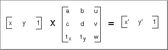
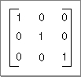
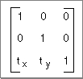
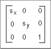
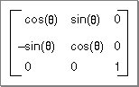
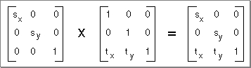

The Transformation Matrix
The Movie Toolbox makes extensive use of transformation matrices to define graphical operations that are performed on movies when they are displayed. A transformation matrix defines how to map points from one coordinate space into another coordinate space. By modifying the contents of a transformation matrix, you can perform several standard graphical display operations, including translation, rotation, and scaling. The Movie Toolbox provides a set of functions that make it easy for you to manipulate translation matrices. Those functions are discussed in "Matrix Functions" which begins on page 2-321. The remainder of this section provides an introduction to matrix operations in a graphical environment.The matrix used to accomplish two-dimensional transformations is described mathematically by a 3-by-3 matrix. Figure 2-19 shows a sample 3-by-3 matrix. Note that QuickTime assumes that the values of the matrix elements u and v are always 0.0, and the value of matrix element w is always 1.0.
Figure 2-19 A point transformed by a 3-by-3 matrix

During display operations, the contents of a 3-by-3 matrix transform a point (x,y) into a point (x',y') by means of the following equations:
x' = ax + cy + tx
y' = bx + dy + ty
For example, the matrix shown in Figure 2-20 performs no transformation. It is referred to as the identity matrix.
Figure 2-20 The identity matrix

Using the formulas discussed earlier, you can see that this matrix would generate a new point (x',y') that is the same as the old point (x,y):
x' = 1x + 0y + 0
y' = 0x + 1y + 0
x' = y and y' = y
In order to move an image by a specified displacement, you perform a translation operation. This operation modifies the x and y coordinates of each point by a specified amount. The matrix shown in Figure 2-21 describes a translation operation.
Figure 2-21 A matrix that describes a translation operation

You can stretch or shrink an image by performing a scaling operation. This operation modifies the x and y coordinates by some factor. The magnitude of the x and y factors governs whether the new image is larger or smaller than the original. In addition, by making the x factor negative, you can flip the image about the x-axis; similarly, you can flip the image horizontally, about the y-axis, by making the y factor negative. The matrix shown in Figure 2-22 describes a scaling operation.
Figure 2-22 A matrix that describes a scaling operation

Finally, you can rotate an image by a specified angle by performing a rotation operation. You specify the magnitude and direction of the rotation by specifying factors for both x and y. The matrix shown in Figure 2-23 rotates an image counterclockwise by an angle q.
Figure 2-23 A matrix that describes a rotation operation

You can combine matrices that define different transformations into a single matrix. The resulting matrix retains the attributes of both transformations. For example, you can both scale and translate an image by defining a matrix similar to that shown in Figure 2-24.
Figure 2-24 A matrix that describes a scaling and translation operation

You combine two matrices by concatenating them. Mathematically, the two matrices are combined by matrix multiplication. Note that the order in which you concatenate matrices is important--matrix operations are not commutative.
Transformation matrices used by the Movie Toolbox contain the following data types:
[0] [0]Fixed [1] [0]Fixed [2] [0]Fract [0] [1]Fixed [1] [1]Fixed [2] [1]Fract [0] [2]Fixed [1] [2]Fixed [2] [2]FractEach cell in this table represents the data type of the corresponding element of a 3-by-3 matrix. All of the elements in the first two columns of a matrix are represented byFixedvalues. Values in the third column are represented asFractvalues. TheFractdata type specifies a 32-bit, fixed-point value that contains 2 integer bits and 30 fractional bits. This data type is useful for accurately representing numbers in the range from -2 to 2. For more information about theFractdata type, see Inside Macintosh: Imaging.